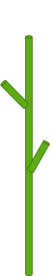
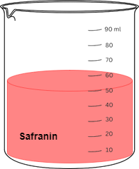
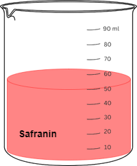
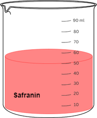

Instructions
- Choose a fresh stem of a plant (Amaranthus).
- Take a small portion of stem.
- Cut the stem transversely.
- Shift these sections with the help of a brush in or watch glass containing water.
- Transfer the stem section onto a glass microscope slide.
- Add 2- 3 drops solution of safranin for 2-5 minutes.
- Rinse the sections briefly in distilled water.
- Add fast green for a few seconds to a minute.
- Rinse the section in distilled water.
- Add a drop of water.
- Place a coverslip over the stem section.
- Place the prepared clean slide on the stage of the microscope.
- Start with the magnification objective lens.
- You will see a figure like this of the cross section of the stem.
Equipement Required



 



